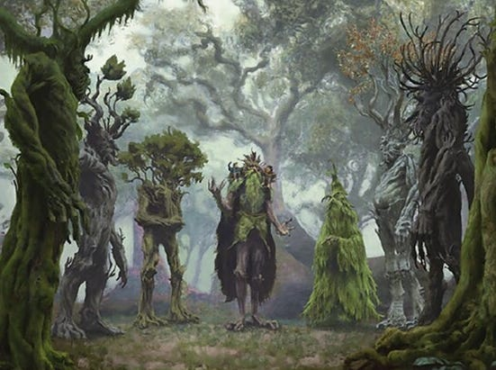

Council of the Ents: How Random Forest in tidymodels Delivers Judgments

The tapestry of metaphors we’ve been weaving in the “Metaphors in Motion” series takes a mythical twist as we step into our fourth installment. We’ve traversed the plains of linear regression, delved into the binary realms of logistic regression, and climbed the intricate branches of decision trees. Now, we find ourselves amidst the dense forests of Tolkien’s Middle-earth, drawing parallels with the awe-inspiring Ents — the venerable tree shepherds of ancient lore.
Just as Ents are more than mere trees, the Random Forest algorithm in the tidymodels package is far more than a mere collection of decision trees. Imagine a council where each member, seasoned by time, brings forth unique wisdom, collectively arriving at judgments that resonate with profound insight. This is the essence of Random Forest — a chorus of decision trees harmonizing to discern patterns and make predictions. As we embark on this journey, we will illuminate the intricate dance between the Ents of Tolkien’s universe and the ensemble approach of Random Forest, exploring how their collective wisdom far surpasses the sum of their individual insights.
The Essence of Ents and Trees
In the vast forests of Tolkien’s Middle-earth, Ents stand as guardians of ancient wisdom, their slow-paced lives allowing them to gather knowledge over eons. Their roots, both literal and metaphorical, run deep into the history of the land. With gnarled limbs and deep-set eyes, Ents are the epitome of nature’s wise stewards, overseeing the forests with a patient and methodical demeanor.
Much like Ents, decision trees in the realm of machine learning stand sentinel over data. At the heart of their structure, they methodically dissect information, making decisions at every node based on specific criteria. These trees, although insightful, possess an inherent vulnerability: their decisions can be too granular, too tailored to the specific data they’ve been nurtured on. This often leads to overfitting, where a tree might be overly influenced by noise or outliers in the data, reducing its ability to generalize well to new, unseen data.
In the same way that an individual Ent holds a piece of the larger narrative, but not its entirety, a single decision tree captures only a fragment of the dataset’s overarching story. Its decisions, while informed, can benefit from the collective wisdom of many. This notion sets the stage for an assembly of trees, a gathering that harnesses the strengths of each member while mitigating individual weaknesses. And in this gathering, much like the council of Ents, lies the power of the Random Forest algorithm.
The Council’s Gathering: Ensemble Learning
Deep within the legendary woods, Ents — solitary beings of immense wisdom — converge in times of necessity, forming the ‘Entmoot’, a purposeful assembly characterized by prolonged, contemplative dialogues. Each Ent, akin to a whispering leaf, carries with it experiences from varied epochs, contributing multifaceted perspectives and wisdom to the collective decision-making process. In an atmosphere brimming with solemnity, they deliberate, ensuring that every voice is heard, and every nuance considered, before a consensus is reached.
Parallelly, in the world of data science, we engage with the Random Forest algorithm, a method that, too, believes in the potency of collective wisdom. As if echoing the Ents, Random Forest forms its own council — an assembly of decision trees, each nurtured on a random subset of the data, imparting its own unique insights. The algorithm ensures these trees, each possibly harboring their own biases and imperfections, do not dominate the collective decision. The verdict — whether it be a classification or a prediction — emerges from an aggregation of voices, commonly through majority voting or averaging, ensuring that the final outcome is balanced, robust, and safeguarded against individual tree anomalies.
The algorithm’s eloquence lies in its embracing of diversity and unity, ensuring that while each tree’s voice is distinct, the ensemble speaks in unison, delivering predictions that are both stable and reliable. This ensemble methodology mitigates overfitting, a common ailment that plagues individual trees when they become too entwined with the training data, thereby losing their ability to generalize effectively to unseen data.
In our data-driven endeavors, much like an Entmoot, the Random Forest algorithm stands resilient, ensuring that our models, informed by the collective wisdom of myriad decision trees, navigate through the perplexities of data, delivering judgments that are both insightful and reliable.
Walking with Ents: Building a Random Forest Model in tidymodels
To navigate the intricate and enigmatic woods of Middle-earth with Ents is to walk with legends — each step echoing centuries of lore, every rustling leaf whispering tales of yore. Tolkien’s Ents, though seemingly ponderous, move with purpose and profound understanding of the world around them. Let’s embark on a similar journey through the expansive forest of data, guided by the Random Forest algorithm, and craft our own council of Ents using the tidymodels package.
Before our journey commences, let’s ensure we have the tools for our expedition:
# Summoning the necessary tomes and scrolls
library(tidymodels)
library(tidyverse)For our journey, we’ll use the mtcars dataset, a classic tome of motorcar specifications, as our guiding map:
# The parchment of data
data <- as_tibble(mtcars)
# Splitting our tales: some for the council's learning, others for testing its wisdom
set.seed(123) # Ensuring the path remains the same on every journey
data_split <- initial_split(data, prop = 0.75)
training_data <- training(data_split)
validation_data <- testing(data_split)Crafting our council — our Random Forest — is akin to gathering Ents for an Entmoot. Each tree is distinct, yet their collective wisdom is paramount:
# Crafting the council of Ents
rf_spec <- rand_forest(trees = 1000) %>%
set_engine("ranger", importance = 'permutation') %>%
set_mode("regression")
# Invoking the council’s wisdom on our data
rf_fit <- rf_spec %>%
fit(mpg ~ ., data = training_data)In these incantations, we’ve summoned a powerful ensemble of a thousand trees, each ready to weigh in, explore the intricacies of our dataset, and grant us insights that are both deep-rooted and expansive.
Hearing the Ents’ Verdict: Interpreting and Evaluating the Model
In Tolkien’s realm, after the lengthy deliberations of the Entmoot, the Ents arrive at decisions that resonate with the collective wisdom of the ages. Their verdicts, though arrived at after prolonged contemplation, hold profound implications and guide the trajectory of Middle-earth’s destiny. Similarly, once our Random Forest model has been trained, the culmination of its myriad decision trees imparts a verdict. This verdict, forged from the collective insights of every tree in the ensemble, is our prediction. But how do we understand this council’s decree and measure its wisdom?
The Random Forest algorithm, by its very nature, allows us to not only make predictions but also evaluate the importance of different variables in the decision-making process:
# Gauging the significance of each council member’s voice
importance <- vip::vip(rf_fit)
# Visualizing the wisdom imparted
plot(importance)
This code provides a glimpse into which features, or predictors, carry the most weight in our model. In the context of our metaphor, it’s akin to understanding which Ents or topics had the most influence in the Entmoot’s decision-making process.
Furthermore, the model’s true wisdom can be assessed by its ability to generalize its knowledge to unseen data. We evaluate this through various metrics such as accuracy, precision, recall, and others depending on the task at hand:
# Evaluating the council’s foresight on unseen tales
predictions <- predict(rf_fit, new_data = validation_data)
results <- validation_data %>%
bind_cols(predictions) %>%
yardstick::metrics(truth = mpg, estimate = .pred)Here, we’re essentially asking our ensemble of Ents: “Given new scenarios and tales you’ve not heard before, how accurately can you predict the outcomes?” The metrics returned provide us with an answer, helping gauge the efficacy and reliability of our model.
In our journey with Ents and the Random Forest, it’s imperative that we not only heed the council’s decisions but also scrutinize, understand, and evaluate the collective wisdom it imparts.
The Final Verdict of the Ents and Reflections on Our Journey
As we bring our exploration of Random Forests to a close, it’s worth taking a moment to reflect upon the profound wisdom of our Ents and their counterpart in data science. While the Ents’ deliberations at the Entmoot might stretch across days or even weeks, our computational council of trees makes swift decisions, powered by the speed of modern technology. In fact, one could jest that if Middle-earth had the algorithms we possess today, the Ents would’ve reached their decisions before Merry and Pippin even had time for a second breakfast!
Yet, much like the Ents, the true value of the Random Forest doesn’t just lie in its speed but in the collective wisdom of its ensemble. By pooling together the insights of numerous decision trees, this algorithm offers robust predictions, making it a stalwart ally in our data science toolkit.
And there we have it: our fourth episode of “Metaphors in Motion” complete. As we’ve journeyed from the linear pathways of linear regression, traversed the logistic bends, stood firm with individual decision trees, and now wandered with the Ents of the Random Forest, it’s evident that the realm of machine learning is as vast and varied as the tales of Middle-earth.
But before we close this chapter, let’s delve into the practical applicability of the Random Forest with five real-life scenarios where this ensemble of Ents has been invoked to render its wisdom.
Five Tales Where Ents Rendered Their Wisdom: Real-life Applications of Random Forests
The Quest for Health: Medical Diagnostics
- Tale: In the sprawling lands of medical diagnostics, swift and accurate detection of diseases can make the difference between a quick recovery and prolonged suffering.
- Ents’ Role: Random Forests have been employed to analyze myriad patient symptoms, medical images, and even genetic sequences. By parsing through these complex datasets, our council of Ents can identify patterns and anomalies, leading to early and accurate disease detection.
Guarding the Treasures: Financial Fraud Detection
- Tale: In the vaults of financial institutions, treasures are under constant threat from crafty burglars aiming to deceive and steal.
- Ents’ Role: Random Forests have proven instrumental in detecting fraudulent transactions. By analyzing vast transactional histories, our Ents identify suspicious patterns, raising the alarm bells before the burglars can escape with their ill-gotten gains.
Nature’s Whispers: Environmental Monitoring
- Tale: From the ancient woods to vast plains, our environment sends subtle signals, hinting at its health and impending changes.
- Ents’ Role: Random Forests are used to analyze satellite imagery and sensor data to monitor deforestation, track animal migrations, and predict natural calamities. Like the Ents guarding Fangorn Forest, our algorithmic guardians keep a watchful eye on our planet’s health.
Elixirs and Brews: Pharmaceutical Research
- Tale: In the quest to concoct potent elixirs to combat ailments, countless combinations of ingredients are tried and tested.
- Ents’ Role: Random Forests aid in the discovery of new drugs by analyzing compound structures and their biological impacts. By discerning patterns in these vast datasets, our Ents guide researchers towards promising drug candidates.
Deciphering Chatter: Customer Feedback Analysis
- Tale: In the bustling marketplaces, merchants are inundated with feedback, praise, complaints, and suggestions from their clientele.
- Ents’ Role: By applying Random Forests to analyze customer feedback, businesses can glean insights about product preferences, areas of improvement, and emerging market trends. Like Ents sifting through the voices in the Entmoot, businesses can discern the collective sentiment of their clientele.
These tales showcase the versatility and power of Random Forests in addressing challenges across varied domains. From health to finance, nature to commerce, the Ents’ wisdom resonates, providing guidance and insights that shape outcomes.